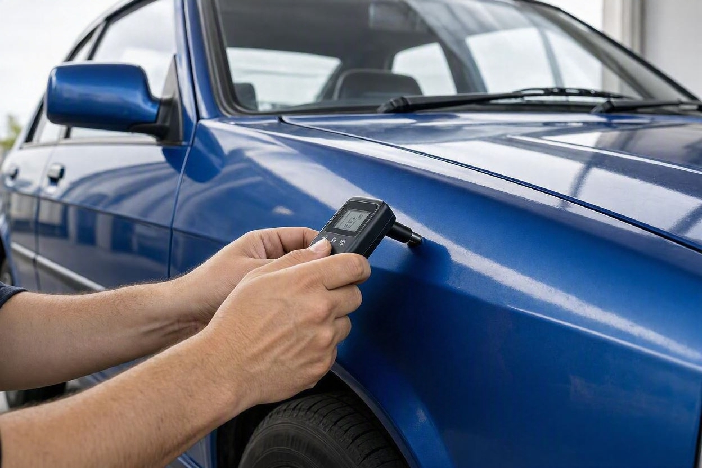
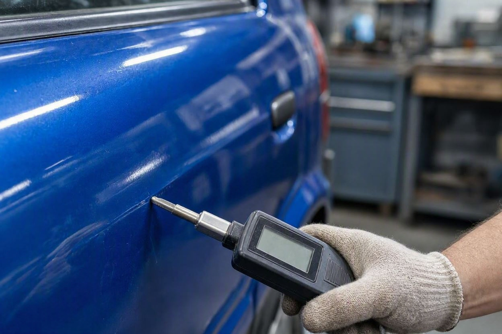
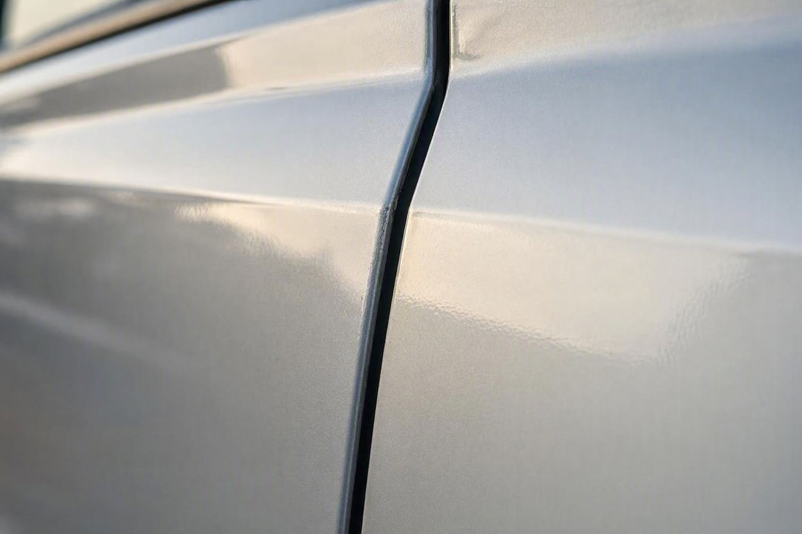
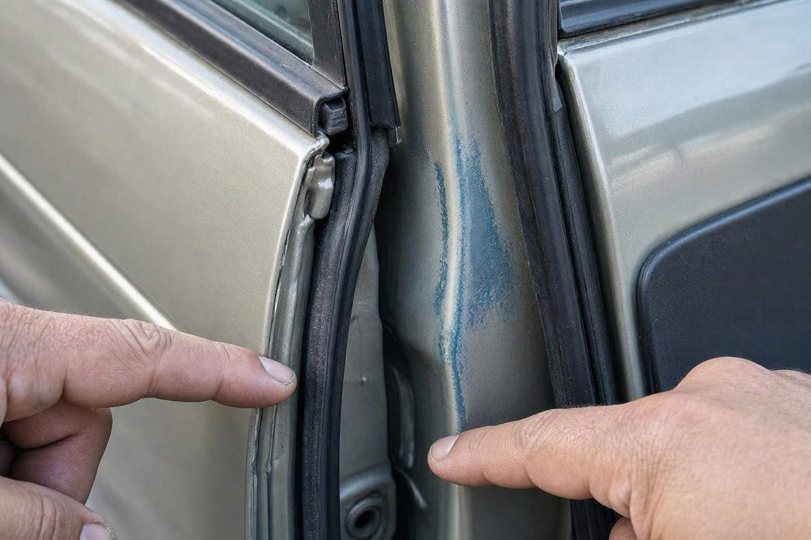

خودرو رنگ شده ارزش خرید دارد؟ جواب صادقانه یک کارشناس
خیلیها تا میشنوند خودرو یک لکه رنگ دارد، از خیر معامله میگذرند. اما یک گلگیر رنگشده بهخاطر خط و خش، با خودرویی که کل بدنهاش صافکاری شده زمین تا آسمان فرق دارد.
سؤال «خودرو رنگ شده ارزش خرید دارد یا نه» یکی از پرتکرارترین دغدغههای خریداران دست دوم است. جواب صادقانه این است که بستگی دارد، نه یک بله یا خیر ساده. رنگشدگی بهتنهایی بد نیست؛ چیزی که اهمیت دارد دلیل رنگ، محل و گستردگی آن و تناسب قیمت با افت است. اگر میخواهید پیش از تصمیم، خیالتان از وضعیت واقعی بدنه راحت باشد، کارماچک برای خرید مطمئنتر خودرو این موارد را دقیق بررسی میکند. در ادامه صادقانه میگوییم کِی رنگشدگی مهم نیست و کِی باید از معامله فاصله بگیرید.
خودرو رنگ شده همیشه بد نیست و میتواند ارزش خرید داشته باشد، به شرط اینکه دلیل رنگ منطقی باشد (مثل خط و خش یا فرورفتگی جزئی)، محل و گستردگی آن محدود باشد و قیمت متناسب با افت تنظیم شده باشد. رنگشدگی گسترده همراه با ایراد شاسی یا رنگی که برای پنهان کردن تصادف سنگین انجام شده، معامله پرریسکی است.
- رنگشدگی بهتنهایی معیار رد یا قبول معامله نیست.
- دلیل رنگ مهم است: خط و خش با پنهان کردن تصادف سنگین فرق دارد.
- محل و گستردگی رنگ، بیشتر از وجود رنگ اهمیت دارد.
- رنگ همراه با ایراد شاسی، خط قرمز است.
- یک خودروی رنگشده فقط وقتی ارزش دارد که قیمتش افت را جبران کند.
رنگشدگی خودرو یعنی چه؟
رنگشدگی یعنی بخشی از بدنه دوباره رنگ شده و از رنگ کارخانه فاصله گرفته است. این کار میتواند خیلی جزئی باشد، مثل رنگ یک گلگیر، یا خیلی گسترده، مثل رنگ کامل بدنه. هر کدام معنی متفاوتی دارند.
نکته مهم اینجاست که رنگشدگی همیشه به معنی تصادف بزرگ نیست. گاهی یک خط و خش ساده یا فرورفتگی کوچک هم دلیل رنگ است. برای همین نباید فقط با دیدن رنگ، معامله را رد کرد.
چرا یک خودرو رنگ میشود؟
دلیل رنگشدگی مهمترین چیزی است که ارزش خرید را مشخص میکند. دلایل رایج:
- خط و خش سطحی یا خراش پارکینگی که فقط ظاهر را خراب کرده است.
- فرورفتگی جزئی که با صافکاری سبک و رنگ برطرف شده است.
- تصادف متوسط که یک یا دو قطعه را درگیر کرده است.
- تصادف سنگین که بدنه و احتمالاً شاسی را درگیر کرده و رنگ برای پوشاندن آن انجام شده است.
سه مورد اول معمولاً قابل قبولاند. مورد چهارم همان جایی است که باید محتاط شوید. تشخیص این تفاوت، کار اصلی یک کارشناسی درست است.

کِی رنگشدگی مشکل جدی نیست؟
رنگشدگی وقتی مشکل بزرگی نیست که محدود، منطقی و بدون درگیری سازهای باشد. در این حالتها معمولاً میتوان با خیال راحتتر معامله کرد:
- رنگ فقط روی قطعات بیرونی و غیرسازهای مثل گلگیر یا درب است.
- گستردگی رنگ کم است و بقیه بدنه سالم و یکدست است.
- کیفیت رنگ خوب است و اختلاف رنگ یا زبری سطح دیده نمیشود.
- شاسی و اجزای اصلی بدنه سالماند و نشانه ضربه ندارند.
پیش از معامله، خودرو را بررسی کنید
اگر درباره دلیل و گستردگی رنگشدگی خودرو مطمئن نیستید، بررسی تخصصی میتواند ابهامهای معامله را کمتر کند.
شروع کارشناسی خودروکِی باید از معامله بترسید؟
بعضی رنگشدگیها علامت خطر جدیاند. در این موارد ارزش خرید بهشدت پایین میآید یا معامله اصلاً توصیه نمیشود:
- رنگ گسترده روی چند قطعه اصلی که با هم تصادف سنگین را نشان میدهند.
- رنگ همراه با نشانههای ایراد شاسی، مثل ناهماهنگی درزها یا کشیده شدن خودرو در جاده.
- رنگ روی ستونها، سقف یا کف که معمولاً به سازه بدنه مربوط است.
- رنگی که با هدف پنهان کردن جوش، پرکردن یا تعویض قطعه انجام شده است.
در این شرایط، رنگ فقط ظاهر ماجرا است و مشکل اصلی زیر آن پنهان شده. اگر رنگشدگی همراه با شک به شاسی است، پیش از هر تصمیم، راهنمای تشخیص شاسی ضربه خورده خودرو را بخوانید تا نشانهها را جدیتر بررسی کنید.
اثر رنگشدگی روی قیمت و افت
رنگشدگی روی قیمت خودرو اثر میگذارد، اما میزان این افت ثابت نیست و به دلیل، محل و گستردگی رنگ بستگی دارد. یک رنگ جزئی افت کمی دارد، اما رنگ گسترده یا رنگ همراه با ایراد شاسی افت زیادی ایجاد میکند.
منطق ساده است: یک خودروی رنگشده وقتی ارزش خرید دارد که قیمتش این افت را جبران کند. اگر فروشنده خودرو را با قیمت خودروی بیرنگ میفروشد، معامله به نفع شما نیست. برای اینکه بدانید معامله چقدر منطقی است، بررسی افت قیمت در کنار وضعیت بدنه کمککننده است. اگر میخواهید کل مسیر خرید را مرحلهبهمرحله چک کنید، چک لیست خرید خودرو دست دوم نقطه خوبی برای شروع است.
| نوع رنگشدگی | ریسک | ارزش خرید |
|---|---|---|
| رنگ یک قطعه بهخاطر خط و خش | پایین | با قیمت مناسب، منطقی |
| رنگ دو یا سه قطعه، بدون ایراد شاسی | متوسط | مشروط به افت قیمت واقعی |
| رنگ گسترده بدنه | بالا | فقط با افت قیمت زیاد |
| رنگ همراه با ایراد شاسی | بسیار بالا | معمولاً توصیه نمیشود |
چطور بفهمیم کجا و چقدر رنگ شده؟
برای اینکه تصمیم درستی بگیرید، باید بدانید رنگ کجا و چقدر است. این مراحل کمک میکنند:
- بررسی چشمی:اختلاف رنگ، زبری سطح و پاشش رنگ روی درزها و لاستیک دور در.
- بازتاب نور:خودرو را از زاویه نگاه کنید تا موج، صافکاری و ناهمواری بدنه دیده شود.
- ضخامت رنگ:با دستگاه رنگسنج، ضخامت رنگ هر قطعه سنجیده میشود.
- بررسی سازه:ستونها، درزها و شاسی برای نشانه ضربه یا جوش کنترل میشوند.

بخشی از این بررسیها با چشم ممکن است، اما تشخیص دقیق ضخامت رنگ و ایراد سازهای معمولاً به ابزار و تجربه کارشناس نیاز دارد.

کارماچک اینجا چه کمکی میکند
کارماچک خدمات کارشناسی خودرو را برای بررسی فنی، رنگ، بدنه و عوامل مؤثر بر ارزش معامله ارائه میدهد. فقط ایراد خودرو را شناسایی نمیکنیم؛ اثر آن روی هزینه تعمیر و ارزش واقعی معامله را هم مشخص میکنیم. اگر میخواهید دقیقاً بدانید رنگشدگی این خودرو در چه حدی است و چقدر روی قیمت اثر میگذارد، میتوانید کارشناسی رنگ و بدنه را ثبت کنید.
جمعبندی: جواب صادقانه
جواب صادقانه به «آیا خودرو رنگ شده ارزش خرید دارد» این است: بله، اگر رنگ محدود و منطقی باشد، شاسی سالم باشد و قیمت افت را جبران کند. نه، اگر رنگ گسترده باشد یا برای پنهان کردن ایراد سازهای انجام شده باشد. مهم این است که بهجای ترس از کلمه «رنگ»، دنبال دلیل و گستردگی آن باشید. یک بررسی درست، تفاوت یک معامله خوب و یک اشتباه پرهزینه را روشن میکند.
قبل از خرید، وضعیت رنگ و بدنه را روشن کنید
پیش از پرداخت پول، بگذارید دلیل و گستردگی رنگشدگی و اثرش بر قیمت با یک بررسی دقیق مشخص شود.
ثبت درخواست کارشناسیسؤالات متداول
خرید خودرو رنگ شده اشتباه است؟
نه لزوماً. رنگشدگی محدود بهخاطر خط و خش یا فرورفتگی جزئی، اگر شاسی سالم باشد و قیمت متناسب با افت باشد، میتواند معامله منطقی باشد. اشتباه وقتی رخ میدهد که رنگ گسترده باشد یا ایراد سازهای را پنهان کند و قیمت هم مثل خودروی بیرنگ باشد.
رنگشدگی چقدر از قیمت خودرو کم میکند؟
میزان افت ثابت نیست و به دلیل، محل و گستردگی رنگ بستگی دارد. رنگ یک قطعه افت کمی دارد، اما رنگ گسترده یا رنگ همراه با ایراد شاسی افت زیادی ایجاد میکند. برای عدد دقیق باید وضعیت همان خودرو در کنار قیمت روز بازار بررسی شود، نه یک درصد ثابت.
از کجا بفهمم رنگشدگی بهخاطر تصادف بوده یا خط و خش؟
محل و گستردگی رنگ سرنخ اصلی است. رنگ یک قطعه بیرونی معمولاً به خط و خش مربوط است، اما رنگ چند قطعه اصلی، ستونها یا سقف نشانه تصادف جدیتر است. بررسی درزها، جوش و وضعیت شاسی به تشخیص دلیل کمک میکند و اغلب به کارشناسی نیاز دارد.
رنگشدگی جزئی برای فروش دوباره مشکلساز است؟
رنگ جزئی و باکیفیت معمولاً فروش را خیلی سخت نمیکند، اما خریدار بعدی هم آن را در قیمت لحاظ میکند. یعنی افت قیمت تا حدی با خودرو میماند. اگر خودرو را با قیمت منطقی بخرید، این موضوع در فروش دوباره کمتر شما را اذیت میکند.
آیا با چشم میشود رنگشدگی را تشخیص داد؟
بعضی نشانهها با چشم دیده میشوند: اختلاف رنگ، زبری سطح و پاشش رنگ روی درزها. اما تشخیص دقیق ضخامت رنگ و ایراد سازهای به دستگاه رنگسنج و تجربه کارشناس نیاز دارد. برای معاملههای مهم، تکیه فقط به بررسی چشمی ریسک دارد.
رنگشدگی همراه با ایراد شاسی خطرناک است؟
بله. رنگی که ایراد شاسی را پنهان میکند، هم ایمنی خودرو و هم ارزش آن را پایین میآورد. در این حالت رنگ فقط نشانه بیرونی مشکل است. چنین خودرویی معمولاً ارزش خرید ندارد، مگر با افت قیمت بسیار زیاد و با آگاهی کامل از وضعیت آن.